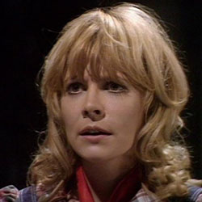

| Home | The Doctors | The Companions | The Villains |
|
|||
|
Jo GrantJo Grant is a fictional character played by Katy Manning in the long-running British science fiction television series Doctor Who. Jo was introduced by Barry Letts and Terrance Dicks in the first episode of Doctor Who 's eighth season (1971) as a new companion of series protagonist the Doctor, in his third incarnation (Jon Pertwee). After the Doctor's previous companion Liz Shaw (Caroline John), a scientist and intellectual, the production team looked to introduce a less experienced companion to act as an audience surrogate. Within the series narrative, Jo is a junior civilian operative for United Nations Intelligence Taskforce, an international organisation that defends the Earth from alien threats, assigned as an assistant to the Doctor, who is initially stranded on earth. Once he regains use of his time machine, the TARDIS she accompanies him in travels across time and space. Jo departs the Doctor's company in the 1973 television serial The Green Death having fallen in love with a human professor. On television, she next encounters the Doctor over thirty years later in the 2010 Sarah Jane Adventures serial Death of the Doctor. Manning and Pertwee enjoyed a close working relationship; Manning felt this added to the success of the partnership between Jo and the Third Doctor. Though her character was criticised for not being a progressive interpretation of a woman, Manning felt both that feminism was not a contemporary concern and Jo had her virtues aside from her intelligence, such as her loyalty. The character's exit is generally considered one of the emotional high points of Doctor Who 's 1963–89 run; Russell T Davies felt pressure to remain true to this exit when re-introducing the character in 2010. |